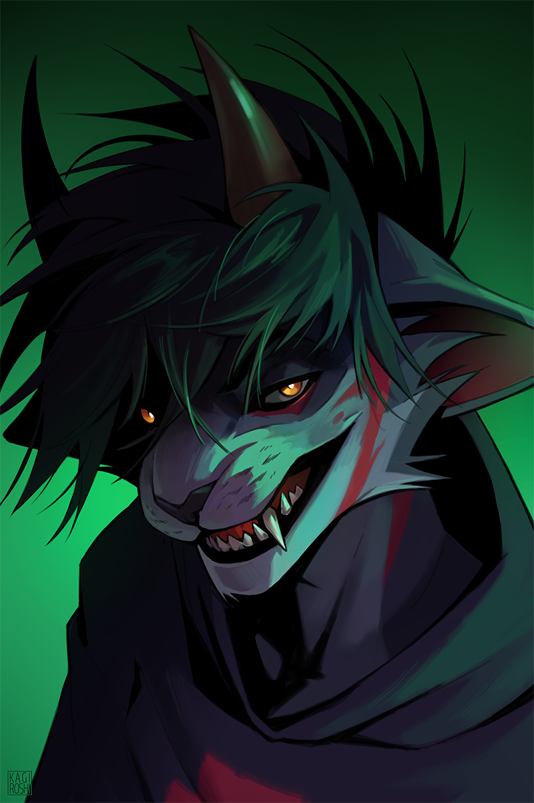

Жил-был Карбел в обычном современном городе. Однажды он, в ничем не примечательный день, неспеша прогуливался по улице, почти полностью погружённый в свои мысли. Всё вокруг было привычным, обыденным. Однако в доселе знакомой улице он переферийно заметил необычное мерцание, некое искажение пространства вокруг себя. Это воистину заставило его отстраниться от своих дум, дабы воочию убедиться всё ли с ним в порядке и что вокруг происходит. Быстро осмотревшись он заметил, что вокруг нет никого - улицы пусты. Засим он заметил, как эти искажения вьются каскадно, стремятся в какую-то сторону, к какой-то точке. Он решил проследовать за этими мнимыми "узорами", отчего через пару десятков шагов смог лицезреть... портал... Это слово было первым пришедшим ему на ум при виде сего явления. Сомнений не было, особенно при виде того, как листва под дуновением ветра влетала в искажённое пространство, легко укладываясь на необычного вида... землю..? Карбел осмотрелся и, не долго думая, ступил сквозь эту аномалию... Именно так и начинает повествовать Карбел каждый раз, когда у него вопрошают о появлении его рогов.
Karbel

Характеристики
- Интеллект 15
- Ловкость 15
- Сила 15